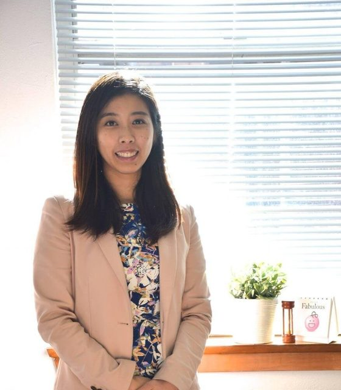
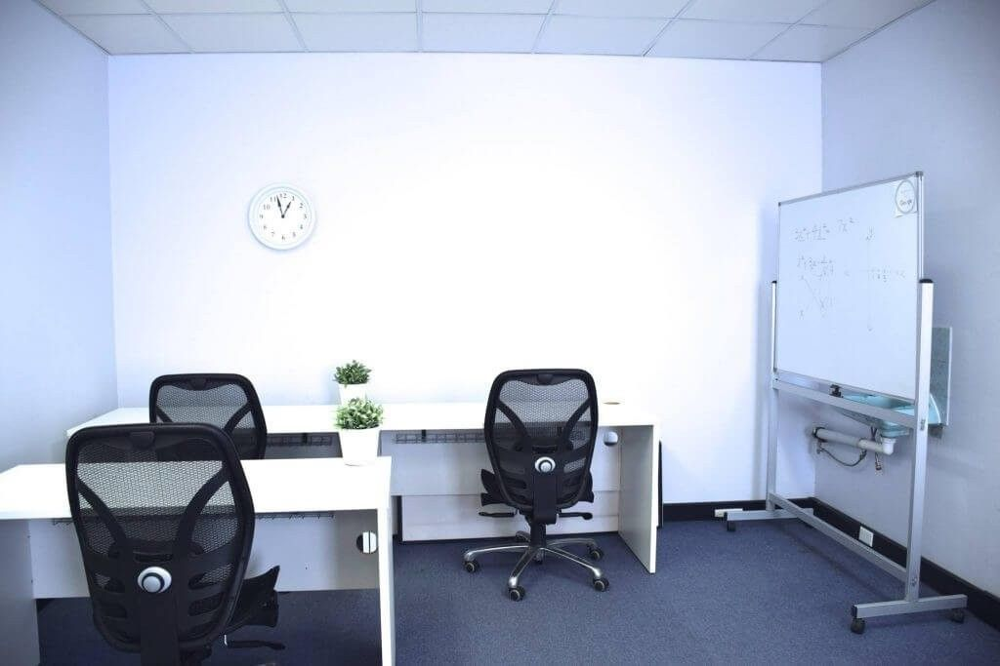

Years 7–12, St Leonards and online
Lessons in the same order as your school.
Every school follows a different topic sequence. At YK Education, we build each student’s program around their own school. Maths, English and Japanese.
4.9out of 5 in Google reviews (43 reviews)
Try it: put the topics in your school’s order
Choose a school, or drag the topics on the left. The YK lessons on the right follow.
At school this year
Your YK lessons
An example using the five topics of Year 11 Mathematics Advanced. Schools A, B and C are made up for this example.
YK-Method
Three steps, built around each student.
- 1
We assess
Your current ability, your knowledge gaps and your school’s lesson sequence. This decides the pace, the strategy and the focus.
- 2
We create your program
Each student’s lesson plan is developed in consultation with Yuna, a NSW qualified high school teacher.
- 3
We keep adjusting
Our tutors continually assess progress, and adjust the lesson plan and the pace to match.
Two hours a week
One hour to learn, one hour to practise.
Programs are two hours per week for Years 10 to 12. The Year 7–9 Maths program is one hour per week.
Subjects
Choose the year and the subject.

Founder
Yuna Kubota
“I used to be a NSW High School Teacher and now I am on a mission to provide individualised lessons to students.”
Yuna is the founder of YK Education and a qualified high school teacher. She completed a Bachelor of Education at the University of NSW and a Post Graduate Certificate in Education. You’ll always see her in the centre, assisting tutors and students.
Our tutors
- All our Maths, English and Japanese tutors have achieved top bands in at least HSC Extension 1 in the subject they teach.
- Every tutor has passed a training program run by Yuna, to learn evidence-based teaching methods.
Students and parents
What they say about YK.
やればできる！
生徒たちの結果。
料金
- 無料
- 無料相談（コンサルテーション）
- $40＋GST
- 体験レッスン
- $1200＋GST
- 一学期（10週間・毎週2時間）
- なし
- 入会金
Every course, in full.
Open a course to read everything on its page: what is unique about the program, the syllabus, the fees and the frequently asked questions.
The text below is the original wording of the current website.
Courses
Years 7 to 10: Maths, English and Japanese
Skip to content
Year 7-10 School Tutors
Year 7-10 Tutors Sydney
Most of the content in the junior years are prerequisites for the senior years. The individualised lesson plan targets the student’s knowledge gaps and ensures building a strong foundation, so they are well prepared for year 11 and 12.
YEAR 7-10 MATHS TUTORING
What’s unique about our Maths program?
#1 You learn the Maths topics in the same order as school Every school has a different topic sequence they follow. Our individualised lesson plan aligns with each student’s scope and sequence in school, so they can be guided on the relevant topics they need help with the most.
#2 We identify your current ability and customise a program for you The program will also target their weak areas, and once the foundation is strong we can accelerate the pace to allow the student to be one topic ahead of school for increased understanding when learnt at school.
See more about our Year 10 Maths Tutors
Year 7-9 Maths Program (1 Hour Per Week)
We assess student’s current level and create a lesson plan based on student’s school scope and sequence.
Our individualised lesson plan aligns with each student’s scope and sequence in school, so they can be guided on the relevant topics they need help with the most. Our YK-tutors will continually assess student progress, and adjust the lesson plan and pace accordingly.
- YK theory books– Summary notes and example questions
- Revision Quiz
- Homework
- School Assessment preparation
Year 10 Mathematics (2 hours per week)
Year 10 Maths program prepares students for Year 11 through theory session and workshop session.
Students learn content in the theory lesson and practise exam-style questions in the workshop session to prepare for assessments.
YEAR 7 -10 ENGLISH TUTORING
What’s unique about our English program?
#1 You learn what you need for the HSC The junior YK-English modules are designed to prepare students for the HSC by working on analytical skills (techniques), and creative writing. Every term, we complete two YK-Modules: Analytical Module and Creative Module
#2 You will prepare for your school assessment with us We always leave room in the term program to support students with preparing for school assessment as every school has a different assessment.
See more about our Year 10 English Tutors
YK Program (1 Hour Per Week)
4 weeks – Analytical Module
For the analytical module, students learn how to analyse poems, short films, prose, and Shakespeare. Students receive individual feedback on their essay.
4 weeks – Creative Writing Module
During the creative writing module, students are guided through the process of developing setting, characterization, plot by using literary techniques. Students receive individual feedback on their composition.
2 weeks – School Assessment Preparation
(Year 7-10)
ENGLISH TUTORING
What’s unique about our program?
YEAR 7 - 10 JAPANESE TUTORING
What’s unique about our Japanese program?
#1 We deliver our classes in Japanese, but use English to aid comprehension. Our lessons are conducted in Japanese whenever possible so students can learn in an authentic environment. Japanese is a communication tool, after all. Our teachers are Bilingual in Japanese and English.
#2 You will use Japanese We believe that learning a language is most effective with peers. We focus on applying the learning and using the language between peers. For example, reading and making Japanese recipes, role play conversations in different scenarios, learning Japanese song lyrics. Speaking and listening skills can only be developed through “doing” in an authentic environment! We are a strong believer of “Language must be fun!”
#3 You will prepare for your school assessment with your sensei (tutor) We always leave room in the term program to support students with preparing for school assessment as every school has a different assessment. We also ensure that their personal needs like grammar and vocabulary are supported.
#4 Students receive individual feedback. We mark student’s writing and speaking responses.
For Year 7-10, we focus our classes on communication and immersion. We teach the tools of the language, so that our students can start using the language freely as in everyday conversation. We start by learning the Japanese alphabet and some vocabulary words, and then use those knowledge blocks to build sentences.
Download Now
DOWNLOAD NOW
Subscribe & Get Download Pricing List 2021
- Your infomation will never be shared with any third party
Year 10 Maths: overview, syllabus, fees and questions
The YK Method for Year 10 Maths Tutoring
Year 10 Maths Tutors Sydney
The only Maths Tutoring centre in Sydney that integrates private tutoring and group tutoring classes to help prepare for Year 11 and Year 12 Maths.
Year 10 Maths YK program is a two hour per week program designed to…
- provide opportunities to receive personalised support (one hour)
- Expose students to exam style questions (one hour)
BOOK NOW or CALL 0433 314 850
YK Education has a structured approach to student learning, in which it provides a one-on-one tutoring lesson as well as a session to practice exam-style questions. Not only does YK Education excel at creating a positive learning environment, but also in building close relationships between students and their tutors.
Tiffany Cheung
My son attended YK Education for 4 years for English and maths. He gained a lot of confidence and his mark improved tremendously. The lesson structure was well crafted and easy to follow. Tutors were very supportive and caring in various ways during the 2020 HSC. I highly recommend YK Education.
Modoka STurrumurra High School
By the end of Year 12, I liked to study maths and was really happy about having decided to join YK Education! Its not just a tutoring college, but a place where students are always welcomed by supportive and friendly tutors who work together with you to achieve your personal best. Highly recommend!!
Keiko DWilloughby Girls High School
Year 10 Maths Overview
Why choose Year 10 Maths YK Tutoring?
Maths tutoring at YK is unique because students can expect to receive a Maths tutoring program that suits their needs. Whether students take the Year 10 5.2 Maths lessons or Year 10 5.3 Maths lessons at school.
Here are 3 reasons why our Maths tutoring has helped students improve their results and gain confidence in Maths.
1. Students learn the Maths topics in the same order as their school.
In NSW, every school has a different topic sequence they follow.
This means that the content of the assessment every term slightly differs depending on the school. That is why our individualised lesson plan aligns with each student’s scope and sequence in school. Students are guided on the relevant topics they need help with the most!
2. Students receive a custom Maths program based on the student’s current ability.
Every student is supported with our YK program because the Maths lessons are customised to the student’s needs. Our trained YK-tutors continually assess student progress and adjust the lesson plan and pace accordingly.
3. Lessons are structured and guided by YK-trained tutors using in-house material
Students can expect structured 60 minutes lessons including homework, quizzes, and Maths exam preparation. Students receive weekly theory books and homework sheets and they will be guided by a YK-qualified tutor who has been trained on evidence-based teaching methods.
Call Yuna 0433 314 850 OR Fill out your details for a free consultation
Year 10 Mathematics Syllabus information
Year 10 Mathematics prepares students for the year 11 and year 12 Maths courses. It is a great time to start Maths tutoring to establish a strong foundation for senior studies.
There are prerequisites or prior knowledge from the Year 10 Maths syllabus that are assumed knowledge in Year 11. If students would like to take the Year 11 Advanced Maths course, it is strongly suggested that they complete the 5.3 Advanced Mathematics Course in Year 10.
Discuss with us if you plan to do Advanced Maths but are enrolled in the 5.2 Year 10 Maths course at school. We develop a custom program for each student so that they are prepared for senior mathematics.
The YK-programs are developed so that every YK student is given the opportunity to achieve their personal best. Customised programs allow us to support individual needs and that is why our students always improve.
Click below for useful NESA Resources for Year 10 Mathematics
- Year 10 Maths Syllabus
Call Yuna on 0433 314 850 or Fill out the form
HSC Year 10 Mathematics
2 hours per week: 1 hour - learn theory with individualised support, 1 hour - exam style questions
$ 1300+GST Per Term
1 hour private lesson (up to 2 students) to learn the theory weekly
1 hour workshop lesson for exam practice weekly
Resources that you need to prepare for exams
Quiz to identify strengths and knowledge gaps
Tips, strategies, mindset to approach HSC Mathematics
BOOK a consultation
hsc tutoring
Ready to start Year 10 Maths Tutoring at YK? Call Yuna 0433 314 850 or fill out the form
Year 10 Maths FAQs
1. My child is doing group tutoring elsewhere but she doesn’t learn the topics in the same order as school. Can you help?
Yes! We understand that every school follows a different order of topics.
We customise the program for every student because we want to make sure that students are learning what is most relevant to them. Send us the school’s scope and sequence and past exam results/papers and we develop a learning program for the individual.
2. I’m looking for a private Maths tutor. Do you offer those services?
Our service involves 1 hour of private (up to 2 students) and 1 hour of group workshop lessons.
You will find that the perfect balance of individualised instruction and peer motivation results in a holistic approach to studying. Even in the group lessons, students are following their individual programs.
This is why past students from YK Education have all achieved at least a band 5 in the HSC and many achieve the top 10 in the whole grade.
3. Who are the Maths tutors?
YK Education is lead by a qualified and experienced high school teacher who has experience in Department of Education Schools, HSC Marking, and University teaching. She is the backbone of YK Education.
YK tutors have all received top bands in the relevant extension subject so you can be confident that their knowledge is strong.
In addition to that, every YK-Tutor goes through an official YK teaching course on evidence-based teaching methods developed by Yuna so you can be sure that no matter which tutor you are taught by, you will receive the YK-learning experience.
4. Can you share some past students' Maths exam results?
Results of our past students are proof that the YK teaching method works!
- Full marks in Advanced Mathematics at Willoughby GHS
- Full marks in Advanced Mathematics at Sydney Grammar School
- 1st in the class for Year 10 5.3 Mathematics in Barker College
- 3rd in the grade for Extension 1 Mathematics at Sydney Grammar School
- 1st in Year 12 Advanced Mathematics at Turrumurra High School ….and the list goes on
5. I'm interested. What should I do next?
Thank you for trusting us! We would love to meet you for a consultation.
Please call ot text Yuna (0433 314 850) for a complimentary consultation or half-price trial.
All lessons will be in an office in St Leonards (2 train stops from Chatswood)
Or if you are far from St Leonards, simply join us online.
Address: 4/50 Atchison Street, St Leonards NSW, Australia, 2065.
Phone: 0433 314 850
Email: ykeducation4@gmail.com
Learn from YK-Qualified Year 10 Maths Tutors now
Customised program that follows your school's schedule
Chat with Yuna today
Year 10 English: overview, syllabus, fees and questions
The YK Method for Year 9-10 English Tutoring
Year 10 English Tutors
Learn Literary Techniques.
Get help with textual analysis.
Improve your writing with constructive feedback.
Expect an individualised lesson tailored to your needs.
I highly recommend YK Education as it has helped me identify and understand my strengths and weaknesses in English. Tutors go through what is expected in the different modules and prepare for assessments early on. They are very understanding and patient and ensure students achieve the best results they can. My marks have improved as a result of efficient, productive and enjoyable sessions.
Lara Bothwell
Yuna taught me how to tackle essay questions, and what teachers would look for in an essay. At first, I didn't know how to structure my essay and answer the question completely but after receiving English tuition from Yuna, I became more comfortable answering different types of questions and using suitable techniques from the text to support my answer. It also helped me expand my vocabulary and shortened the time to write essays which helped me significantly during my HSC.
Alisha SWilloughby Girls High School
They helped me understand topics I didn't understand and didn't overwhelm me with the amount of homework. I was a student with average, C grade marks. My tutor helped me gain more marks that lead me to a rise in marks by 25%. Thank you, YK education!
RachelTurrumurra High School
Year 10 English Overview
Why choose Year 10 English YK Tutoring?
One of the key focuses of our English program is to develop the foundational knowledge and skills that are required for senior English while assisting students with their school work to avoid overwhelm.
Students can expect to…
#1 Learn what they need for the HSC
The Year 10 English YK modules are designed to prepare students for the HSC by working on analytical skills (macro and micro techniques), analytical writing and creative writing.
Every term, students complete two YK-Modules: Analytical Module and Creative Module.
#2 Prepare for school assessment with us
Students are supported when preparing for school assessments during the term as every school has a different assessment.
Lessons are methodical and students receive plenty of opportunities for constructive feedback so that they can achieve their individual goals.
Year 10 English Syllabus information
The year 10 syllabus requires students to study examples of spoken text, print texts, visual texts, multimedia texts through fiction, poetry, film, nonfiction, and drama.
Students begin preparing for Year 11 and 12 by:
- Responding to and composing a range of imaginative and critical texts throughout the year
- Conforming to or challenging the audience’s preconceptions and expectations about content and form
- Displaying a personal style in their personal, imaginative, critical and analytical compositions.
To address these requirements, the Year 10 English YK Program focuses on three key pillars;
- Identifying and analysing techniques in texts (prose fiction, poetry, Shakespeare, short film)
- Planning an analytical response using tools
- Writing and editing an analytical composition
Join us for a free consultation or half price trial lesson.
Click below for useful NESA Resources for Year 10 English
- Year 10 English Syllabus
- Year 10 English Suggested Texts
- Year 10 English Performance descriptions (Marking Criteria)
- Year 10 English Student Work Samples: Imaginative Writing
- Year 10 English Student Work Samples: Pursuasive Speech
Year 10 English (2 hours per week)
1 hour per week- learn theory with individualised support, 1 hour - Writing session
$ 1200+GST Per Term
1 hour workshop lesson to practise writing skills
Vocabulary Quiz
Tips, strategies, mindset to approach English
Or if you can not commit to 2 hours per week...
Year 10 English (1 hour per week)
1 hour per week- learn theory with individualised support
$ 880+GST Per Term
Ready to start Year 10 English Tutoring? Call Yuna 0433 314 850 or fill out the form
Year 10 English FAQs
1. I'm interested. What should I do next?
Please call or text Yuna (0433 314 850) for a complimentary consultation or half-price trial.
2. Why do you have the option of the second writing hour?
Another skill that students must learn is exam strategies and being able to write 800-1200 words within a time limit. Regardless of whether students have detailed notes or essay plans on a prescribed text, if they do not answer the unseen question completely or they do not write enough, examination marks will not be reflective of their true knowledge. This is why we have introduced the second writing hour to focus on exam skills.
Learn from YK-Qualified English Tutors now
Year 10 English
Years 11 and 12 (HSC): Maths, English and Japanese
Year 11-12 HSC Tutors Sydney (Maths, English & Japanese)
The YK Method for Year 11-12
Year 11-12 HSC Tutors
Receive a customised learning program and get trained on exam-style questions for the HSC. Work through the YK-material with your YK-Qualified tutor and gain a strong understanding of the NSW syllabus.
YEAR 11-12 HSC MATHS TUTORING
Standard Mathematics, Advanced Mathematics, Extension Mathematics
What’s unique about our Maths Tutor program?
#1 You learn the Maths topics in the same order as school
Every school has a different topic sequence they follow. Our individualised lesson plan aligns with each student’s scope and sequence in school, so they can be guided on the relevant topics they need help with the most.
#2 We identify your current ability and customise a program for you
The program will also target their weak areas, and once the foundation is strong we can accelerate the pace to allow the student to be one topic ahead of school for increased understanding when learnt at school.
See more: HSC Year 11 Maths Tutors
YK Program (Up to 3hours per week)
Lesson 1- Learn new content
There will be a maximum of 2 students per lesson who will both be working through their individual curriculum Learn new lesson content at your own pace with your YK-tutor through the hybrid model.
Lesson 2 – Workshop Session: Complete exam-style questions and 1-on-1 opportunity to ask questions to YK-tutors
What we offer?
Our individualised lesson plan aligns with each student’s scope and sequence in school, so they can be guided on the relevant topics they need help with the most.
Our YK-tutors will continually assess his or her progress, and adjust the lesson plan and pacing accordingly.
- Exam-style questions– Be exposed to curve-ball questions that they will likely encounter in assessments.
See more about our Year 11 HSC MathsTutors
HSC ENGLISH TUTORING YEAR 11-12
Standard English, Advanced English
#1 You learn what you need.
It is important to note that depending on the school, the prescribed text is different.
#2 You understand how to study for English
Students spend one term preparing and building up skills to help them face the end-of-term task for the module their school selected with relative ease and confidence.
#3 You will prepare for your school assessment with your tutor
Our individualised program ensures that our students are fully prepared for their school assessments, Trial examinations, and the HSC. We also ensure that their personal needs like grammar and vocabulary are supported.
See more: HSC Year 11 English Tutors
YK Program (2 hours per week)
Lesson 1: Private lesson
Students receive individualised attention
- Receive individual feedback on ideas and language
- Get help to plan and prepare for assessments for school
Students learn how to study for English modules
- Study the context of the author
- Expand vocabulary for essays
- Analyse texts
- Develop an argument
- Practice answering essays with exam-style questions
Lesson 2: Workshop Session
- Apply and practise the skills that the students learnt in the lesson
- Put together notes on the prescribed text
Our individualised lesson plan aligns with each student’s scope and sequence in school, so they can be guided on their prescribed text.
- YK workshop books– Create your own study notes on your prescribed text
- Exam-style questions– Be exposed to a variety of questions to prepare for unseen questions
- Homework – Receive individual feedback on your ideas and language
HSC ENGLISH TUTORING
YEAR 11-12 HSC JAPANESE TUTORING
Beginners Japanese, Continuers Japanese, Extension Japanese
#1 We deliver our classes in Japanese, and English to aid comprehension. Our lessons are conducted in Japanese whenever possible so students can learn in an authentic environment. Japanese is a communication tool, after all. Our teachers are Bilingual in Japanese and English.
#2 We make sure that you understand so you have full control of the language In year 11, the YK-Japanese program aims to finish the Year 11 and 12 grammar and kanji. That way, students can focus on applying the grammar and mastering examination techniques in Year 12.
#3 You will use Japanese We believe that learning a language is most effective with peers. We focus on applying the learning and using the language between peers. For example, reading and making Japanese recipes, role play conversations in different scenarios, learning Japanese song lyrics. Speaking and listening skills can only be developed through “doing” in an authentic environment! We are a strong believer of “Language must be fun!”
#4 You will prepare for your school assessment with your sensei (tutor) We always leave room in the term program to support students with preparing for school assessment as every school has a different assessment. We also ensure that their personal needs like grammar and vocabulary are supported.
#5 Students receive individual feedback. We mark student’s writing and speaking responses.
See more about our Year 11 HSC Japanese tutoring
YK Program
In Year 11, we aim to finish learning all HSC grammatical structures and Kanji characters.
Students can expect:
- Revision quizzes
- Vocabulary and kanji sets
- Sample questions on speaking, reading and writing
- Individual feedback on their work
- Support for school assessments
In Year 12, students focus applying the language and refining examination techniques to prepare for school assessment.
Students work on:
- HSC examination strategies including ways to study for reading, listening, writing, speaking
- Sophisticated language and text types
- Speaking skills
- Cultural knowledge
Year 12 Extension Japanese
We will prepare students for both the prescribed text and issues study (essay and monologue). Students can expect:
- HSC examination strategies
- List of vocabulary and kanji for different issues and subtopics
- Sample model responses and translation activities
- Individual feedback
HSC Year 11 Maths: Standard, Advanced and Extension 1
The YK Method for HSC Maths Tutoring
HSC Year 11 Maths Tutors
The only tutoring school in Sydney where you can expect to…
learn Year 11 Mathematics in the same order as your school
from YK-trained tutors
with structured resources
in a supportive and interactive learning environment.
You will feel prepared for your Year 11 HSC Standard, Advanced, Extension 1 Mathematics Exams
With all of our past YK students receiving an HSC Standard, Advanced or Extension 1
Maths mark of 80+ in Advanced Maths (Band 5 and 6),
you can trust that our two hour Maths program will prepare you for confidence.
Read our Google Reviews for more!
My experience at YK education has been quite good. The learning is laid back but yet we cover a lot of topics in depth. They made sure I got a 99% mark in my exam. (This student received 50/50 1st out of 178 students in Advanced Mathematics and 47/50 4th out of 163 students)
Jai KSydney Grammar High School
I was originally recommended to join from a friend and I enjoy learning with friendly tutors here. I get tutored for English and Maths, and I got a full mark for my prelim Advanced Maths exam! Hard work really pays off, thanks to my tutors. I would recommend this tutoring to my friends as well.
Rena SWilloughby Girls High School
I had many tutors during primary and high school but Yuna was by far my favourite! She helped me wrap my head around the topics I struggled the most with and gave me many strategies on how to approach difficult questions. All of Yuna's hard work helped me reach a band 6 in my HSC.
Lisa GKillara High School
Year 11 HSC Maths Overview
No more group lessons that go in a different order as your school. No more private tutors leaving just before your Maths exams.
Why should you choose Year 11 HSC Maths Tutoring with YK Education?
One of the biggest differences with us is that YK Education is run by an NSW Qualified high school teacher who started with the vision of helping students’ achieve their individual goals.
This means that even if you are learning Standard Maths, Advanced Maths, or Extension 1 Maths…
- Clear explanation of Maths content. YK Tutors are trained extensively on evidence based teaching methods (Just like what a school teacher would learn at university). Every YK Tutor uses the same lesson structure, teaching methods, and resources to teach so it doesn’t matter who you get.
- Students learn the HSC Maths topics in the same order as their school. Every school follows a different order of Maths topics. YK Program is carefully designed to match the individual’s needs which means that we develop your personal program based on your knowledge gaps, your school’s order of topics, examination requirement.
- Students receive a customised program. We understand that every student’s needs are different depending on the individual.
- Students have access to everything they need for Maths study. YK Resources include theory books, quizzes, homework sheets, and exam questions to provide a holistic solution to your studies.
- Students feel important and part of the YK family. YK understands your personal needs as well as academic needs like study skills, self-care, stress management.
We believe that true academic success is when students are self-driven and intrinsically motivated to study on their own.
Anyone can teach maths if they know the content.
Best teachers know how to motivate students to learn on their own and become curious about Maths.
Year 11 Maths Syllabus information
Year 11 HSC Standard Mathematics Syllabus information
The Standard Mathematics course is targeted at students who completed at least the Year 10 5.1 or 5.2 Maths course. The biggest different with the HSC Advanced Maths course is that there is no calculus involved in the HSC Standard Maths syllabus.
Students will build on the following year 10 Maths topics:
- Financial Mathematics
- Linear Relationships
- Non-Linear Relationships
- Area and Surface Area
- Volume
- Right-Angled Trigonometry
- Single Variable Data Analysis
- Some content from Equations and Probability
The year 11 Standard Maths topics from the syllabus are listed on the right.
It is worth noting that our YK program will help students identify the knowledge gaps so that they are not disadvantaged even if they struggled through year 10 Mathematics.
Click below for useful NESA Resources for HSC Standard Mathematics
- HSC Standard Maths Syllabus
- NESA Standard Maths Topic Guide
- HSC Standard Maths Formula Sheet
- Past Papers
- Exam equipment List
I want to enrol in Year 11 HSC Maths Tutoring!
Year 11 HSC Advanced Mathematics Syllabus information
The HSC Advanced Mathematics is targeted at students who have the foundation of Mathematics in year 10, ideally for those who completed the 10.3 course or the Year 10 Advanced Maths course.
Students study 5 main topics: Functions, Trigonometry, Calculus, Statistical Analysis, Logarithm and Exponential Functions.
These Year 11 topics build on Year 10.3 topics
- Algebraic techniques, Surds and indices, Equations
- Linear and Non-linear relationships (5.3)
- Trigonometry and Pythagoras’ theorem
- Single variable data analysis
- Properties of Geometrical (5.3) Shapes.
We strongly encourage students to join our holiday Maths Program if they struggled in Year 10.3 Maths to build on a strong foundation before starting senior mathematics.
We developed the YK-program so that every YK student is given the opportunity to achieve their personal best. Customised programs allow us to support individual needs and that is why our students always improve.
Click below for useful NESA Resources for HSC Advanced Mathematics
- HSC Advanced Maths Syllabus
- HSC Advanced Maths NESA Topic Guide (At the bottom of the link)
- HSC Advanced Maths Reference Sheet
- HSC Maths Exam equipment List
Year 11 HSC Extension 1 Mathematics Syllabus information
The HSC Extension 1 Mathematics is a course that is targeted at students who completed Year 10.3 Maths confidently.
The course is worth 1 unit out of the 10 units calculated in the HSC and students learn higher level Mathematics for an extra 60 hours in addition to the HSC Advanced Maths Course.
As you can see on the table on the right, Extension 1 builds on Advanced Maths topics.
Although not necessary, Extension 1 Mathematics is advantageous for those students who are interested in taking science, engineering, finance and economics at a tertiary level.
*In year 12, students have the option to pick up an extra unit of HSC Extension 2 Maths.
Click below for useful NESA Resources for HSC Extension 1 Mathematics
- HSC Extension 1 Maths Syllabus
- Extension 1 Maths NESA Topic Guide (at the bottom of the link)
- HSC Maths Reference Sheet
- HSC Extension 1 Maths Past Papers
- Maths Exam equipment List
HSC Year 11 Mathematics (Standard, Advanced, Extension 1 Maths)
Ready to start HSC Advanced Maths Tutoring? Call Yuna 0433 314 850 or fill out the form
HSC Year 11 Maths FAQs
2. My child is doing group tutoring elsewhere but she doesn’t learn the topics in the same order as school. Can you help?
3. I’m looking for a private Maths tutor. Do you offer those services?
4. Who are the Maths tutors?
5. Can you share some past students' Maths exam results?
6. I'm interested. What should I do next?
Learn from YK-Qualified HSC Maths Tutors now
HSC Standard Maths, HSC Advanced Maths, HSC Extension Maths
HSC Year 11 English: Standard and Advanced
The YK Method for HSC English Tutoring
HSC Year 11 English Tutors
Receive feedback on your writing
Get help analysing your prescribed texts.
Feel prepared for Year 11 and HSC
Standard, Advanced, Extension 1 English Exams
With all of our past YK students receiving a mark of 80+ (Band 5 and 6) in HSC Standard, Advanced English,
you can trust that our two-hour English program will prepare you with confidence.
YK Education has been extremely helpful as a Year 12 student preparing for the HSC. Tutors go through what is expected in the different topics and modules and prepare for assessments early on. They are very understanding and patient through their teaching methods and ensure students achieve the best results they can. My marks have improved as a result of efficient, productive and enjoyable sessions.
Lara Both
I received tuition for English from Year 11. Yuna taught me how to tackle essay questions, and what teachers would look for in an essay. At first, I didn't know how to structure my essay and answer the question but receiving english tuititon from Yuna, I became more comfortable answering different types of questions and use suitable techniques from the text to support my answer.
Year 11 HSC English Overview
Why should you choose YK for Year 11 HSC English Tutoring?
One of the focuses of the HSC English program at YK Education is to prepare students for the upcoming assessments by assisting with prescribed text analysis and analytical and creative compositions.
This means that even if students are learning Standard English or Advanced English, they receive 2 hours per week with…
1 hour of private lesson per week (up to 2 students)
Since the English prescribed text and assessments are different depending on the school, students have the opportunity to receive individual feedback on their compositions.
- 1 hour of group workshop lesson to prepare for the upcoming module and build on foundational skills Students spend one term preparing and building up skills to help them face the end-of-term task for the selected module with relative ease and confidence.
In addition to our carefully designed programs, one of the priorities for YK is for students to feel important and part of the YK family. YK understands your personal needs as well as academic needs like study skills, self-care, stress management.
Best teachers know how to motivate students to learn independently and be fascinated by different ways texts can be interpreted.
Year 11 English Syllabus information
Year 11 HSC Standard English Syllabus information
In the Standard English Course, students study a range of types of texts including prose fiction, drama, poetry, nonfiction, film, media and digital texts.
Year 11 English Modules:
- Module A: Contemporary Possibilities (A multimodal or digital text which may include film study)
- Module B: Close Study of Literature (Analyse a substantial literary print such as prose fiction, drama, poetry)
- Common Module: Reading to Write (Examines a variety of texts and consolidate skills required for Year 12 and builds on to Year 12 Craft of Writing)
In NSW, these English Modules are prescribed but the prescribed text studied in class and the order in which the modules are studied is selected by the individual school.
The programs at YK Education is completely customised to assist the individual student’s needs.
Click below for useful NESA Resources for HSC Standard English
- HSC Standard English Rubric (Year 11 & 12)
- HSC Standard English Course Structure and Requirements
- Annotation of Selected Texts
I want to enrol in Year 11 HSC English Tutoring!
Year 11 HSC Advanced English Syllabus information
The Advanced English Course involves the study of a range of text types including prose fiction, drama, poetry, nonfiction, film, media and digital texts. One of the differences with the Standard English Course is that students also study Shakespearean drama in Year 12.
The preliminary modules equip students with the skills required for the HSC modules and focus on exploring and critically analysing the ways in which texts and contexts shape and are shaped by different attitudes and values.
- Module A: Narratives that Shape our World
- Module B: Critical Study of Literature
- Common Module: Reading to Write
The prescribed texts that schools study in each module and the corresponding assessment is determined by the individual school. At YK Education students can expect to receive a customised program to meet individual student’s needs.
- HSC Advanced English Rubric (Year 11 & 12)
- HSC Advanced Course structure and requirements
- ModC Support document
HSC Year 11 English (Standard, Advanced English)
2 hours per week: 1 hour - learn theory with individualised support, 1 hour - writing workshoop
1 hour writing workshop lesson
Individualised feedback on your composition
Tips, strategies, mindset to approach HSC English
Ready to start HSC English Tutoring? Call Yuna 0433 314 850 or fill out the form
HSC Year 11 English FAQs
1. I’m looking for a private English tutor. Do you offer those services?
2. Who are the English tutors?
3. I'm interested. What should I do next?
Learn from YK-Qualified HSC English Tutors now
HSC Standard English, HSC Advanced English
HSC Year 11 Japanese
HSC Year 11 Japanese Tutors 🇯🇵🇦🇺 YK Education
The YK Method for HSC Japanese Tutoring
Year 11 HSC Japanese Tutor
Hajimemashite! [Hello, nice to meet you!]
The HSC Japanese YK Tutoring is for students who absolutely love Japanese or who think it’s cool to learn another language.
Students can expect clarity on how to study for HSC Continuers Japanese and to have control over their language before they start Year 12 HSC Japanese. If this sounds like a good plan, then join us for a consultation.
BOOK CONSULTATION or CALL 0433 314 850
With all of our past students receiving at least a band 5 for HSC Japanese
and 90% of our students receiving a band 6 and even NSW State Ranks,
you can be confident that our YK tips, strategies, and mindset will help you regardless of whether you are taking HSC Beginner Japanese, HSC Continuer Japanese, HSC Extension Japanese
I am a Year 12 student at Hornsby Girls High School and I've been taking Japanese continuers + extension and Maths lessons here at YK Education. The teachers are very helpful and I feel that they really care about their students. I also owe my achievements in Japanese Extension to Yuna because without her guidance and support, I definitely would not have been able to rank 1st.
Esther SuenHornsby Girls High School
I received tuition for Japanese at YK Education from year 10 in high school until I completed the HSC. My time spent learning here led to my great achievements in the subject and encouraged me to pursue further study of Japanese language at the tertiary level. The tutors at YK Education were always friendly and genuinely cared about their students' development and well being.
Huon KirkmanRyde Secondary College
Yuna is an excellent tutor for the HSC continuers and extension Japanese courses. She has comprehensive knowledge on the course content and examination requirements for both subjects. With her help, I was able to achieve a first in course for the continuers Japanese course and a band E4 for the extension Japanese course.
Tina GaoNorth Sydney Girls High School
Year 11 Japanese Overview
Don't be confused about how to study HSC Japanese anymore!
Why should you choose HSC Japanese Tutoring at YK?
One of the biggest differences with us is that YK Education is run by an NSW Qualified high school teacher who also has HSC marking experience so you can be confident that the tips you receive from her are valid and reliable.
- Learn all HSC Grammar and Kanji in Year 11 so that students have full control of the language before year 12. That way students can focus on exam technique and time management in year 12 during the HSC year. Language is extra fun when you can use it!
- Lessons are conducted in the Japanese language so that students can develop their listening and speaking skills through their 90 minute study time. We adjust our language to our student’s level and slowly increase the complexity of our output as we speak to the class. I.e. how we speak to year 11 students will be different to how we speak to year 12 students.
- Get help with your school assessments. Learn HSC study tips, Japanese speaking and writing tips and exam strategies.
- Receive accurate feedback on your writing and speaking from a Japanese language point of view (sensei is a native Japanese speaker with full marks for Japanese Language Proficiency Test 1) and also from HSC marking point of view.
We don’t want Japanese to be simply a “subject they study at school”.
Laguage learning is such a special experience. We want students to enjoy being immersed in Japanese language and culture.
Japanese is taught in Japanese so students understand that “language is a communication tool”.
Ready to try YK Japanese experience? Fill out the form or call 0433 314 850
Year 11 HSC Japanese Syllabus information
Year 11 HSC Beginners Japanese Syllabus Overview
This course is intended for students who do not have prior learning in Japanese or those who studied for 100 hours or less in year 7, 8, 9, or 10.
Students learn the three writing systems of Japanese: Hiragana, Katakana, Kanji (list in the links below)
There are 4 skills to master in HSC Beginners Japanese, just like when people learn any language. HSC Beginners Japanese 2.5 hour-exam breakdown is as follows:
- Listening and responding (Respond in English)
- Reading and responding (Respond in English)
- Writing (3 tasks with 100ji, 150ji and 250ji)
- Speaking (5-minute conversation)
[Refer to page 12 of the HSC Beginner Japanese Syllabus or skim through the HSC Beginner Japanese Past Paper if you’d like to learn more. Links below.]
Other facts to note:
- Students are allowed monolingual and/or bilingual dictionaries during the examination.
- There is no prescribed vocabulary list but students learn strategies from YK to ensure that they are prepared for any Japanese examination.
Click for useful NESA Resources for HSC Continuers Japanese
- HSC Sample Exam writing Booklet (Genkoo Youshi)
- HSC Japanese Beginner syllabus and other HSC NESA resources (Grammar list can be found in the syllabus)
- HSC Beginners Prescribed Kanji List
- HSC Japanese dictionary list
- HSC Past Papers
- HSC Oral Marking Guidelines
Contact for a consultation or call Yuna 0433 314 850
Year 11 HSC Continuers Japanese Syllabus Overview
This course is intended to cater for students who have studied Japanese in year 9 and 10.
There are 4 skills to master in HSC Continuers Japanese, just like when people learn any language. The 3 hour HSC Japanese Continuers Examination breakdown as follows:
- Reading and responding (Respond in English and Japanese)
- Writing (2 tasks with 150ji and 400ji)
- Speaking (10 minute conversation)
And according to the syllabus, using these 4 skills students will learn how to …
- Communicate to exchange opinion
- Produce spoken and written text (speaking and writing assessment)
- Understand aspects of language and culture and Japanese speaking communities
There is no prescribed vocabulary but here’s a simple tip. Since some themes are prescribed, the words that come up in the exams are not completely random. Choose to learn the vocabularies that are related to these HSC Continuers Japanese prescribed themes. [Themes from the syllabus listed on the left]
Just like this, students can expect tips so that they can have greater clarity on how to study.
Although students won’t know the exact question, all the Japanese speaking and writing questions will revolve around these topics so yes, students can study for Japanese!
Useful Resources for HSC Continuers Japanese
- HSC Vocabulary Guide and Prescribed Kanji List
- HSC Japanese Continuers Syllabus and other HSC NESA Resources (Find the Grammar List in the syllabus)
- HSC Japanese Dictionary List and other resources list from NESA
- HSC Japanese Continuers Past Papers
- HSC Japanese Continuers Oral Marking Criteria
HSC Continuers Japanese
90 minutes per week inlcuding 30min Revision quiz, 40min Grammar study, 20min Skills develpment
$ 1000+GST Per Term
Tips, strategies, mindset to approach HSC Japanese
A Japanese-speaking environment because sensei is Bilingual Japanese and English
Grammar and Kanji quizzes and weekly writing tasks
Feedback on your writing and Speaking
Help with school assessments
A fun and productive learning environment with peers who love Japan as much as you do!
Private lessons with Yuna are limited ($150ph)
Ready to learn more HSC Japanese study tips with us? Call Yuna 0433 314 850 Or fill out the form
HSC Beginners Japanese
Year 11 and Year 12 HSC Japanese Beginners Tutor
Students can expect clarity on how to study for HSC Beginners Japanese Join us for a consultation!
- Start from the foundation of Hiragana, Katakana, and grammar structures and build up from there so that you can compose your own sentences. Language is extra fun when you can use it!
HSC Japanese Beginners
HSC Extension Japanese
HSC Extension Japanese Tutors
はじめまして！
Prepare for Japanese Extension Essay writing and monologue with us.
Yuna is an excellent tutor for the HSC continuers and extension Japanese courses. She has comprehensive knowledge on the course content and examination requirements for both subjects. With her help, I was able to achieve a first in course for the continuers Japanese course and a band E4 for the extension Japanese course. I would highly recommend Yuna to anyone for the HSC continuers and extension Japanese courses. Thank you for all your help Yuna!
North Sydney Girls
If your child is studing Japanese for HSC this is the place. Sure there are many places but this one is the best by far and that's my child's opinion.
Dennis (Father)HSC Extension and Continuers Japanese
YK Education was the ideal help for getting me through the Japanese HSC Acceleration course. My tutor Yuna was extremely supportive and always provided relevant and succinct exercises to not only strengthen my prior knowledge but also build on areas which were unfamiliar. I chose YK Education because one of my peers in my class always had advanced booklets that helped him achieve high results, he didn't want me to be tutored with Yuna because he knew it was so effective I could top the class! I only wish I'd started with YK Education sooner.
LucienInternational Grammar School
The YK Japanese Extension Tutoring Program assists students with:
Preparing for both Japanese essay writing and monologue
Preparing for the HSC Japanese prescribed text
The Extension Japanese HSC exam provides students with unseen questions but there are definitely ways to prepare for the assessments using the prescribed issues. Let us help you!
Connectedness
Journeys
Impact of the past
For example:
People and places
Traditions and beliefs
Communication
Self-discovery
Making choices
Hopes and dreams
Memories
Experiences
City and country
How does YK Japanese Extension Tutoring Program prepare students for assessments?
- Access to a topic-by-topic list of vocabulary (e.g. vocabulary words useful to the topic: Hopes and dreams)
- Essays:
Get sample essays for various questions on the prescribed themes
Learn how to structure Japanese essays
Write essays that revolve around prescribed issues.
Get feedback on your essay
3. Monologue:
Learn how to structure a monologue
Get feedback on Japanese monologue
4. Prescribed text study
Get help with empathy task
Past students have received NSW State rankings and you can do it too!
YK Education equips students with the tools and skills to approach HSC Extension Japanese so they know exactly how to maximise their marks.
Year 12 Japanese Extension Syllabus information
Year 12 HSC Extension Japanese Syllabus information
HSC Extension Japanese can be taken by students in Year 12 after they complete the preliminary HSC Japanese Continuers course.
The Extension course builds upon the Japanese Continuers course and we strongly suggest that students complete the Year 11 YK Continuers program.
Students will achieve the following syllabus objectives:
Objective 1 — present and discuss opinions, ideas and points of view in Japanese
Objective 2 — evaluate, analyse and respond to a text that is in Japanese and that reflects the culture of Japanese-speaking communities.
Click below for useful NESA Resources for HSC Extension Japanese
- HSC Japanese Extension Syllabus Information
- HSC Japanese Extension Oral marking guideline
- HSC Japanese Extension Course prescriptions: Kimino na wa
I want to enrol in Year 12 Extension Japanese Tutoring
HSC Year 12 Japanese Extension
1.5 hours per week: Practice Exam questions, Feedback, Vocabulary Lists
Practice exam questions
Feedback on your writing
Sample Essays
Ready to start HSC Japanese Extension Tutoring? Call Yuna 0433 314 850 or fill out the form
HSC Year 12 Extension Japanese FAQs
1. I prefer private lessons over group sessions. Can you do private lessons?
We have limited number of spots for private lessons but it is possible.
That being said, ideas are equally as important as language skills for Extension Japanese so sharing ideas in Japanese with your peers is also a valuable learning experience. The monologue component of the assessment requires students to talk about a social issue in Japanese so ther is definitely a benefit to group lessons. If you prefer private lessons to get more one on one help on essay writing and monologue, we may be able to cater pending availability.
2. I missed your Year 11 Japanese Continuers program but want to enrol in Year 12 Extension program. Can I still join?
We can definitely help. Please book a consultation and we can chat about our options.
3. I live far from St Leonards. Do you offer online lessons?
Yes! We have a hybrid online/in-person lesson struture. That would be no problem at all. (Although, we do prefer to see our student's faces in person from time to time 🙂 )
4. I'm interested. What should I do next?
Learn from YK-Qualified HSC Japanese Tutors now
HSC Japanese Continuers, HSC Japanese Extension
About YK Education
Home page: the YK-Method, and what students, parents and tutors say
Individualised, Structured, Supportive
NSW High School Tutoring For Year 7-12 Students
BOOK YOUR FREE CONSULTATION
Hi! My name is Yuna and I’m the backbone of the YK-Education Family.
“I lead our team of tutors at YK-Education.
I used to be a NSW High School Teacher and now I am on a mission to provide individualised lessons to students.
We’re here to support you so that you can focus on feeling good about yourself by helping you achieving your personal best!”
Why does our HSC tutor program work?
The YK-Method follows a Student-centred, Teacher-guided approach
We differentiate programs for different schools and individual students.
- Every school follows a different timeline or topic sequence.
- Every student has a different set of topics they struggle with and different ways of learning.
You will receive truly customised and individualised lessons in a structured learning environment.
- We assess your current ability, knowledge gaps and your school’s lesson sequence. This will dictate pace, strategy and the focus.
We create your program, and our tutors use YK-teaching materials to cater to your needs.
What do our students say?
“I highly recommend YK Education as it has helped me identify and understand my strengths and weaknesses in English, and has helped me improve in these areas. As a full-time ballet student, my lessons have allowed me to become more knowledgeable and made me feel confident and well prepared for my HSC, despite not going to a normal high school. I do English sessions once a week and have thrived off how helpful and advantageous they are. Tutors go through what is expected in the different topics and modules and prepare for assessments early on. They are very understanding and patient through their teaching methods and ensure students achieve the best results they can. My marks have improved as a result of efficient, productive and enjoyable sessions.”
Student (HSC English)Lara B
“I am a Year 12 student at Hornsby Girls High School and I've been taking Japanese continuers + extension and Maths lessons here at YK Education. I've seen a significant improvement in my marks, particularly in regards to Maths and my attitude towards this subject has greatly changed in that I now enjoy the challenge of tackling difficult concepts and working my way through complex questions rather than giving up completely. I also owe my achievements in Japanese Extension to Yuna because without her guidance and support, I definitely would not have been able to rank 1st.”
Student (HSC Japanese and Maths)Esther S
“I was originally recommended to join from a friend and I enjoy learning with friendly tutors here. I get tutored for English and Maths, and I got a full mark for my prelim Advanced Maths exam! Hard work really pays off, thanks to my tutors. I would recommend this tutoring to my friends as well.”
Student (HSC English and Maths)Rena S
The YK-Method implements the best features of both Private and Group HSC Tutoring.
We simulate a private tuition environment with:
- Customised learning program to target every student’s unique educational needs and struggles
- Quality YK-theory books and exam questions that are aligned to both the NSW curriculum and the school’s order of topic
- Flexibility in the program where students can ask questions about homework and receive help to prepare for school assessment tasks – lesson are planned for you!
As a bonus, you’ll experience the social aspects of group tuition which allows you to be inspired by others’ work ethics while making new friends.
What do our parents say?
“Very rarely do you find a service as professional and yet so friendly as YK Tutoring. After contacting many tutors, I found Yuna. We had tutors before, but nobody was as effective as YK Tutoring. You see it in the results! I even signed up my other daughter. YK tutoring has a genuine student learning approach and their tutors are well liked by students. I can highly recommend it.”
Parent (English)Hannah B
“As a parent, I regard highly the teaching at YK Education and recommend their tutoring to high school students. The standard at YK Education is high. You will not be disappointed. High expectations are placed on students to do homework too, but it is beneficial. Maths and English and Japanese are subject areas of particular strength. Students are given consideration and assisted if they hit blockages. Real care is shown for the welfare of all students. We receive follow up telephone calls on progress too. We have formed a good long-term relationship with YK Education. The school has a busy schedule, so I would advise getting in early.”
Parent (Maths, English, Japanese)Ian Wark
Teamwork between our YK-Qualified Trained HSC Sydney Tutors and Yuna.
Are all 99.95 ATAR high achievers, good teachers?
- We don’t simply match a high achieving graduate to a student in need. High ATAR doesn’t mean that they are good teachers – remember university qualified teachers study for at least 4 years to learn to teach.
- All our Maths, English, Japanese tutors have:
- Achieved top bands in at least HSC Extension 1 their teaching subject
- Passed a training program run by Yuna, a qualified high school teacher, to learn evidence-based teaching methods that are back by research so that students can learn most effectively.
Each student’s customised lesson plans is developed in consultation with Yuna, the NSW Qualified High School teacher. You’ll always see Yuna in the centre assisting tutors and students behind the scenes.
What do our YK- Education HSC Tutors say?
“Having worked at YK for a few years, I've found the atmosphere there supportive for both teaching and learning. The English programmes at YK are one-on-one, meaning that students have sessions that are appropriate for their ability and the specific issues they have in class. As a tutor, I could also build a more personal relationship with each student and encourage them to feel confident in asking questions and identifying areas that they struggle with. Everyone at YK from staff to students is friendly and familiar with each other, and Yuna is an employer who will not hesitate to sit down with you anytime and help you improve in your work. To me, this supportive environment is a great asset of YK and key to helping struggling students reach their full potential.”
ENGLISH TUTORJocelin Chan
"YK Education provides a very welcoming and supportive environment for both students and tutors to thrive. The warm atmosphere and friendly tutors enable students to be unafraid to ask questions as they arise, which ultimately maximises their learning potential. I would have loved to be a student at YK Education during my HSC year, as it provides a space that is not too pressuring but still pushes students to achieve their personal best. YK Education has a structured approach to student learning, in which it provides a one-on-one tutoring lesson as well as a session to practice exam-style questions. Not only does YK Education excel at creating a positive learning environment, but also in building close relationships between students and their tutors."
MATHS TUTOR Tiffany Cheung
"We are an incredibly friendly + supportive community that is always ready to welcome new students (and tutors). Knowing our students and developing positive relationships with them and their parents is core to how YK Education functions. Our commitment to open communication ensures that the needs of our students are prioritised when it comes to planning our lessons and creating our resources. On the flip side as a tutor, the ongoing mentoring that I have received from Yuna has helped me grow professionally and personally."
MATHS TUTORJackie Gao
Experience our individualised tutoring program
Ready to trial the YK-Method?
Visit Us at
- 4/50 Atchison St, St Leonards NSW 2065, Australia
Latest Tutor News
How to break down your Adv English Study Load
Whether you are a Japanese Beginners, Japanese Continuers or Japanese Extension student, implementing additional study within the school holidays will likely help you when you return back to the classroom.
With only 2 weeks, here’s how you break down your study load.
How to break down your Japanese Study Load
How to break down your English Study Load
Whether you are a Standard English, Advanced English or are an Extension 1 or Extension 2 student, it may seem daunting studying for it.
With some clever planning, here’s 4 steps to breaking down your study load in a short time.
Student testimonials
Frequently Asked Questions
- Are you an HSC private tutor? Students can expect a customised learning program that follows the same order as their school that is structured and taught by trained tutors with inhouse resources. YK programs are two hours per week with one hour being a theory lesson with 1-3 students and the other hour being an exam preparation lesson.
- Do I have to enrol for both the theory and workshop lesson? The theory lesson (one hour) fills knowledge gaps for Maths or English topics. The workshop lesson (one hour) prepares students for assessments and HSC examinations so the program is an effective combo.
- I live far/busy during the week. Do you offer online lessons? Absolutely. We do recommend that students come into the centre to build a relationship with us first but if that doesn’t work for you, students can opt in for completely online. The lesson quality is no different, we just think it’s easier to socialise in person 🙂
- Do you come to our home? Our lessons are done in the centre in St Leonards or online. Parents have told us that their child focuses better in the centre as they are inspired by other students. Online lessons are also possible.
- Who are the tutors? YK tutors are high achievers who have received band 6 in at least Extension 1, most of the time Extension 2 so they understand their content well. Additionally, YK Tutors have been extensively trained to follow the YK-Method have been proven to work for students who are both already excelling in their subject and those looking for a confidence booster. Join us for a trial lesson and you will know what we mean 🙂
Chat with Yuna
0433 314 850 or
Book your free consultation
About YK Education
About YK Education
YK Education is a supportive community of teachers and students aimed at fostering holistic growth of students, both academically and personally.
THE YK METHOD
“We plan your lesson sequence to match your school and your knowledge gaps. We deliver your individualised curriculum in a structured and supportive learning environment.”
Who Is Yuna Kubota?
Yuna Kubota, is the founder of YK Education and qualified high school teacher, with the vision of putting students at the centre of their education by catering to their individual needs. You’ll always see her in the centre assisting tutors and students behind the scenes.
She has completed a Bachelor of Education at University of NSW and a Post Graduate Certificate in Education. Reading and learning about new teaching strategies to cater for individual needs, and then implementing them have always been the driving force of Yuna’s motivation. Having heavily involved in the teaching community during her time as a teacher in Primary School, High School, and a little at University, she has enjoyed every moment of teaching and has learnt lots along the way!
She believes that every individual has the potential to achieve their goals, and personalised teaching is the guaranteed best method! – All you need is dedication and a supportive team.
Our Story This is how YK Education began
After teaching at various institutions in Sydney, Yuna realised that her true passion lies in assisting students to recognise their true ability and go on a journey with them to experience that hard work does really pay off.
Although she enjoyed the energy and positive vibes from a thirty-student classroom, she understood that it is challenging to differentiate the lessons for individual student needs in a large classroom without more time.
This is how YK Education began –To support those students who underperform in large classrooms.
Yuna and her team provide quality individualised support for Maths, English, and Japanese tutoring in a structured environment with continual assessment and modifying of lessons.
Meet Yuna and her team of tutors
Meet Yuna and Her Team of Trained Tutors and Study Coaches
Meet Yuna and her team.
We are a team of trained tutors and study coaches who want to bring out our students’ personal best and make learning relevant and enjoyable. We value relationships with our students, so we can better cater to their individual needs. (And, of course we’ve achieved top bands in our subjects.)
How do we ensure our quality of tutors?
#1 YK-tutors are trained on evidence-based teaching strategies that have been proven effective to boost students’ progress. *Note: A qualified secondary teacher studies for at least four years to learn how to teach. Hence, not all university students who received a 99.95ATAR can teach effectively.
#2 Yuna works with YK-tutors to develop the best customised learning program for each student.
Meet the YK-Team
Leo (English Tutor)
- HSC All-rounder, Advanced and Ext. 1 English
- Arts/Law at UNSW
Hobbies
Live theatre Boxing Obsessing over music
What do you love about teaching?
Teaching constantly keeps me on my toes and engaged with my students, and the feeling of when students progress is incredibly rewarding
How would you describe YK Education?
Warm and friendly – we regard every student as pure individuals.
Bella Zheng (Maths Tutor)
- Extension 1 and 2 Maths
- Commerce/Law at UNSW
Listening to music, reading books
I enjoy getting to share my knowledge with others and to be able to make a positive impact on students.
YK is a warm and welcoming centre that continually fosters a supportive and inclusive environment.
Eiliya Nasseri (Maths Tutor)
- Top band in Extension 1 and 2 Maths
- B. Quantum Engineering at UNSW
Tennis, reading, gym.
I can see the growth of a student over time, which is both glorifying and serves as a personal reminder of the slow yet eventual nature of success.
YK is very meticulous in the way it teaches students, and stands out by its ability to find weaknesses and fill them up.
Keiko Doi (Japanese Tutor)
- Top band Continuers and Ext. Japanese
- Ex-YK student
- BA.Advanced Studies
During my free time I enjoy watching movies at home, my personal favourite being the Indiana Jones series! I also love visiting museums about ancient history and art galleries with my friends.
During my tough high school years, I was inspired by the excitement and support my teachers and tutors brought into the classroom – a quality that sparked my early interest for teaching. Teaching a language gives me the joy of making a fun, creative and out-of-the ordinary program (anime is always a popular component!) which complements a student’s Japanese skills but also helps them expand their knowledge about the Japanese culture. Knowing that I could potentially help a student come to like and be excited to learn a language is another one of the greatest joys of teaching.
YK Education is an exciting and supportive place for both tutors and all students. As much as we strive to academically support students to reach their greatest potential, building relationships with other tutors and students always makes the place welcoming. It’s definitely one of a kind!
Sienna Toggle (English Tutor)
- Top band Adv English, Extension 1 English
- Ex-YK Student
- Speech Pathology at USYD
In my free time, I like listening to music, reading, baking, as well as watching dramas or movies. I like trying lots of new things and recently have been enjoying rollerblading as well! Although not as frequently, I also love travelling and exploring new places!
I love being able to guide students and assist them in achieving their personal bests. Being able to teach them valuable skills that will help with their studies and answering their questions, as well as seeing them improve over time is always rewarding.
YK Education offers an amazing tutoring experience. As an English tutor, I can appreciate how we tailor our tutoring for each student in order to create the best learning experience, as well as the emphasis on creating environments that are comfortable and welcoming for the students. As an ex-YK student as well I always felt comfortable during lessons at YK, and always looked forward to them.
Tiffany Cheung (Maths Tutor)
- B.Commerce, B.Information Systems at UNSW
In my spare time, I enjoy watching a variety of TV shows, including Western TV shows, and my personal favourites: Korean dramas, Chinese dramas and Anime. Coming from an Asian background, I love to watch Asian TV shows as a fun way to expose myself to different languages. I also enjoy my time away from the screen doing my next favourite thing: reading books.
Ever since high school, I have always loved helping my friends with problems related to Maths. I love teaching because it gives me the opportunity to help students improve not only academically, but also in their confidence and attitude towards learning. Being able to share my enthusiasm for maths and knowing the impact we make on a student’s learning makes teaching a really rewarding and enjoyable experience.
YK Education has built a very friendly and close-knit community where students and tutors develop close bonds with each other. Both students and tutors are able to thrive in the welcoming and supportive environment that YK Education provides, and in doing so, allows everyone to achieve their personal best. I always look forward to seeing the students every week and watching them grow into individuals who are more proactive in their learning!
Annabelle Bak (English Tutor)
- B.Architectural Studies at UNSW
When I’m not tutoring or studying, I can most likely be found enjoying my free time by sketching, reading and sometimes playing the piano. Although more recently, I’ve grown an interest in cooking and have been loving experimenting with new recipes and cuisines!
The most rewarding part of teaching in my opinion, is being able to witness the progress each student makes with every lesson first-hand. As a tutor, I love helping students grow more confident in themselves and helping them kindle a passion for English.
YK Education acts as a support network where students feel welcomed and inspired to learn. Thanks to YK Education’s combination of individual and group learning, students are able to develop strong bonds with their tutors and peers, working together as a team to reach their academic goals. As a result, YK Education radiates a strong sense of community which you can feel as soon as you walk into the centre.
Gerard Louis (Maths Tutor)
- B.Mechatronic Engineering at UNSW
In my free time I like to read, play games with friends and watch YouTube! Cooking videos are a particular favourite of mine, since I love exploring a variety of simple yet delicious dishes to cook. Outside of my course work, I also enjoy coding, playing around with simple programs and Arduino.
I view teaching as a very meanigful way to put my skills and knowledge to use – supporting younger students in achieving their academic goals. More than improving grades, tutoring is about developing students to learn independently, and I like the idea of having a positive long-term impact on the lives of others.
YK Education creates a friendly and casual yet focused teaching environment, dedicated entirely to the learning of individual students. The content tutors deliver is completely personalised to the students’ own school schedule and ability, maintaining strengths and improving weaknesses so students are well-rounded learners. It is a very welcoming environment where any student can feel supported and encouraged to do their best.
Ian Tay (English & Maths Tutor)
- HSC All-rounder Ext. 1 English and Ext. 1 Maths
- Studying B.Commerce at USYD
Track and field ~100m sprints
Chess
Football
Teaching is such a rewarding experience as I observe the growth of a student as he/she becomes more adept with English. Not only does the student become more knowledgeable, but I, as the tutor, get to impact another student’s learning experience in a positive way. Being able to share my appreciation for English and witnessing the impact that this has on the student makes teaching such an invaluable experience.
At YK education, one can truly feel the community that has been built through its student, tutors, and Yuna. The tutor and student bond is unparalleled, with such bond facilitating the realisation of the student’s potential. As every week passes, both the student and teacher looks forward to the lesson.
Eesha (English Tutor)
Jasmin (Maths Tutor)
Graduated Tutors
JOCELIN CHAN
- North Sydney Girls HS
- Barts in English and Ancient History at Sydney University
- Honours at Sydney University
In my spare time I enjoy writing poetry and drawing. I’ve had a few poems published in different literary journals too! I’m also part of a student radio group at university, and host a music show with one of my friends.
I enjoy teaching because it allows me to not only impart my knowledge and skills to students, but I can also develop a bond with them. Over these past couple of years I’ve seen some students really grow and develop, and I’m proud to be part of that process. The one-on-one, hands-on aspect is so helpful to students who have difficulty keeping up in the class environment, and I’m happy to provide the learning strategies that can help students through their study.
YK Education is a great place for me to work. The outstanding aspect, I feel, is that we develop relationships between each other as staff and also with the students. This creates a warm atmosphere where students feel motivated to learn and unafraid to ask questions. As a staff member too, it’s great to know that I have Yuna’s support and expertise to fall back on, and I know that she truly cares about each one of us.
JACKIE GAO
- North Sydney Girls High School
- BEducation/BScience at the University of Sydney
- Photography
- Going on hikes
- Bouldering
- Finding new gelaterias to visit (I don’t think this counts as a hobby, but I’m going to pretend it’s one)
From the support and encouragement I received from my Year 12 mathematics teacher, I was inspired to pursue a career in teaching. Teaching gives me the opportunity to help others, whether it’s breaking down a tricky maths problem for a student or letting know that it’s okay to take a nap (everything in moderation!). And at the end of the day, nothing is more rewarding than seeing your students leave the lesson feeling a little bit more confident and with a smile on their face.
YK Education is fun, warm & welcoming. Yuna and the other tutors are always supportive, and the students constantly surprise me (in the best possible way). I don’t think there’s ever been a day where I haven’t laughed while I’m here. I love coming into YK Education every week and I hope you will too!
SAMANTHA KO
- Abbotsleigh
- B Psychological Science at Monash University
- Graduate Diploma of Psychology Advanced at Monash University
I have numerous creative outlets that I enjoy in my spare time some of which include creating content using various forms of media—photography, creative writing, short film. To fully relax I enjoy reading, watching television films or movies, and practicing mindfulness in my daily life.
I was always very passionate about English as a subject all throughout primary and middle school. I enjoy teaching because it allows me to translate my love of creative fiction and other creative content and share it in a way that nurtures the student’s passion for the subject and to eventually foster a love for learning.
YK Education is everything I would have wanted as a student as it is a lovely and supportive environment that encourages both students and tutors to flourish. Yuna and the team make it an amazing place to work at and I fully appreciate the work that has gone into making YK Education what it is today. YK Education makes learning and teaching a productive and meaningful process that inspires each individual to teach and learn from one another.
Enrol now
Enrol Now and Book Your Free Consultation Session Today!
Enrol Now
Visit us in St Leonards for a free consultation! (Or Book Online!)
Bring some of your past work, your scope and sequence from school.
We will take care of the rest.
Online lessons or in St Leonards Call Us Today!
PHONE
0433 314 850
hello@ykeducation.com.au
LOCATION
(Only 10 minutes from Chatswood Station)
Facebook Instagram
Office in St Leonards
Or Leave us a message
Tell us about you and we will be in touch!
HSC Juku Sydney (the Japanese page)
入塾方法
① まずは、無料コンサルテーション、トライアルレッスンをご予約ください。
St Leonardsの教室にご来塾いただくか、オンラインにてコンサルテーションを行います。
② 責任をもってHSCの指導を行うために、現状の課題や現地校での数学や英語のScope and sequenceをもとに、一人一人に最適な学習プランをご提案いたします。
「どうにもならないほど成績が悪かったのですが、先生方の叱咤激励のお陰で目に見えて成績があがりました。 子どものやる気を引き出す、そんな指導をして下さいます。」
１２年生 数学・英語保護者
オンラインでも、通塾でも選べます。
電話番号
メールアドレス
admin@ykeducation.com.au
教室の場所
チャットウッドから１０分、セントレナーズ駅から徒歩5分
プログラムの料金
料金のダウンロード
教室はSt Leonardsです。
まずは ご相談ください。
シドニーのYK Education塾はHSC対策に効果的です！
YK Education が「成績が上がる塾」だと言われている理由
YK Educationはシドニーの現地校に通っている生徒対象の数学・英語プログラムです。
学校の教材、個人の現時点での課題、学校のScope and Sequence （勉強する順番）に合わせて勉強できます。学校の定期試験とHSC対策の勉強を同時にしていきます。
10年生、１１年生、１２年生（HSC）は週２時間のプログラムです。＊８年生、９年生 は 週１時間のグループレッスンになります。
２時間のカリキュラム：一時間は個別指導（３人まで）、一時間はグループワークショップで試験対策
個別指導（３人まで）
自分に合ったカリキュラムで効率よく学習を進められます。一人ひとりが効率良く必要な力を身につけられる学習スタイルを組み合わせて学習を進めます。
数学：NSW州では学校によって、勉強する数学のトピックの順番が異なります。YK Education では個人のためのプログラムを組むので、学校で勉強している内容と同じ内容を予習、復習できます。
英語：英語の場合、学校によって教材も違えば、試験の内容も違います。学校の教材として使われている小説、詩や映画の分析を先生とできるから、学期末のアセスメントや試験が安心です！テストに必要なエッセイやスピーの書き方の指導もいたします。
グループワークショップで試験対策
数学：試験対策に特化した授業です。個別指導でしっかり理解したトピックをより深く勉強します。学校の教科書だけでは質問の種類が足りない事が多いので、過去問題を解いている授業になっております。
英語：ＮＳＷ州のＨＳＣではエッセイのほかに、Techniques & Analysis （分析）、そしてCreative Writing (創作分）を書く力が求められています。そのため、このワークショップの授業はエッセイの書き方、詩や短い小説の分析の仕方など基礎力をつける授業内容になっています。 それと、個別授業で指摘された事をもとに、自分のエッセイや分析を直していく時間もワークショップに組み込まれております。
シドニーのHSCスペシャリスト
コンサルテーション無料、体験レッスン４０ドル＋GST
入会金ございません。
まずは 気楽にご相談ください！ 0433 314 850
一学期（１０週間、毎週２時間）１２００ドル＋ＧＳＴ
チーム YKは「やればできる！」をモットーにしています。
- 個人・学校に進度に合わせたカリキュラム
- YK Methodでトレーニングされた講師、
- そして生徒の努力をかけ合わせると・・・ どんな生徒さんでも勉強が楽しくなります！
Year 10 Barker College – 5.3 Course Maths クラスで1位、学年１０位
Year 10 Chatswood High School – English 学年1位 Year 11 Willoughby Girls High School – Advanced Maths 学年1位100点
Year 11 Sydney Grammar School – Advanced Maths 学年1位
Year 11 Chatswood High School – EALD 学年1位 Year 11 Sydney Grammar School – Extension 1 Maths 学年３位
Year 12 Turramurra High School – Advanced Maths 学年１位
Year 12 Willoughy Girls High School – Standard Maths 学年１位
Year 12 Turramurra High School – Standard English 学年３位
など。。。
Blog and tutor news
YK Blog & Resources
Guides
How to break down your Maths Study Load
Whether you are a Standards Mathematics, Advanced Mathematics or are an Extension 1 or Extension 2 student, it may seem daunting studying for it.
With some clever planning, here’s 5 easy steps you can break down your study load.
Evidence Based Learning
The NSW HSC Literacy Techniques List for Students
Knowing a wide range of macro and micro techniques will get you a long way with your HSC English essays. Try expanding your knowledge with this list of common and advanced HSC English techniques, and quiz yourself on any unfamiliar devices.
A parent’s guide to ATAR, HSC & Scaling in NSW
5 tips and strategies which I thoroughly recommend each student takes on to both catch-up and stay ahead!
How to combat fatigue and avoid burnout during your HSC exam period
In this post, we’ll look at 10 practical methods for sustaining your energy and preventing exhaustion during the exam period. These tactics include scheduling regular breaks into your study schedule, eating nutritiously and staying hydrated, exercising frequently, and learning relaxing techniques.
Study Tips
How to beat the feeling of being overwhelmed using a study plan
In this article, we will explore why study plans are able to help, why study plans fail, and how to write a study plan that actually works. We’ll provide practical tips for creating an effective study plan, managing time effectively, and staying motivated throughout the academic year. With the right approach, students can overcome feelings of being overwhelmed and achieve their full potential.
Understanding procrastination and how to use different strategies to combat it
Everyone at some point has procrastinated from a task they may have. I did it and I’m more than sure that you have too. Whether you are studying or doing something that needs to get done, it is now so easy to become distracted with the amount of content you have at your fingertips.
How to study for HSC Maths Exam – what to do in the weeks, days and hours before
In this article we will provide a definitive list as to what you should do for an HSC Maths Exam at all times leading up to and during the test. After reading this article, you’ll be better able and more confident to tackle anything that is thrown at you!
How To
How to Write Discursive Text with examples included
Writing a discursive piece can be a daunting task. Discursive texts give us a considerable amount of freedom in terms of how we may structure our piece, which perspectives we will explore, and the writing style we adopt.
Evidence Based Strategies to Maximise Your Learning & Memory for your next exam
Your brain is one of the most essential organs in the human body, composed of 86 billion neurons that allow you to have the ability to learn and retain information (FYI, that is more than 10x the world’s current population).
How to Study Effectively this Autumn School Holiday 2023
Here’s how to create a study structure, break down your study load into manageable chunks, and stay motivated to get the most out of this holiday!
5 Study Tips for the HSC from a HSC Band 6 All Rounder
HSC Exam Preparation Program for Mathematics and English
YK Education HSC Preparation Program (6-day program) Simulate the HSC exam environment to focus on exam strategies such as time management and ways to avoid
HSC Trial Preparation for Maths and English
Best method to prepare for HSC Trial exams Step 1: Select a few topics to revise using textbooks to build foundational knowledge Step 2: Complete
Receive the latest news and educational content
Subscribe To Our Monthly Newsletter
Questions
Before you enrol.
Are you an HSC private tutor?
Students can expect a customised learning program that follows the same order as their school, structured and taught by trained tutors with in-house resources. Programs are two hours per week: a one-hour theory lesson with 1 to 3 students, and a one-hour exam preparation lesson.
Do you offer online lessons?
Absolutely. We do recommend that students come into the centre first to build a relationship with us, but if that doesn’t work for you, lessons can be completely online. The lesson quality is no different.
Do you come to our home?
Our lessons are held in the centre in St Leonards or online. Parents have told us that their child focuses better in the centre, as they are inspired by other students.
Who are the tutors?
YK tutors are high achievers who received band 6 in at least Extension 1, so they understand their content well. They have also been extensively trained in the YK-Method.
Enrol
Start with a free consultation.
Bring some past work and your scope and sequence from school. We will take care of the rest.

- Address
- 4/50 Atchison St, St Leonards NSW 2065
10 minutes from Chatswood Station. Lessons are online or in St Leonards.
Open in Google Maps - Phone
- 0433 314 850